This is a HTML copy of https://doi.org/10.1145/3184558.3185953 originally published by ACM, redistributed under the terms of Creative Commons Attribution 4.0 (CC BY 4.0). The modifications from the original are solely to improve HTML accessability, compatibility, augmenting HTML metadata and avoiding ACM trademark. To reference this HTML version, use:
Permalink: https://w3id.org/oa/10.1145/3184558.3185953
DOI: https://doi.org/10.1145/3184558.3185953
WWW '18: Proceedings of The Web Conference 2018, Lyon, France, April 2018
Tierless Web programming languages allow combining client-side and server-side programming in a single program. This allows defining expressions with both client and server parts, and at the same time provides good static guarantees regarding client-server communication. However, these nice properties come at a cost: most tierless languages offer very poor support for modularity and separate compilation.
To regain this modularity and offer a larger-scale notion of composition, we propose to leverage a well-known tool:
CCS Concepts: • Software and its engineering → Functional languages;
ACM Reference Format:
Gabriel Radanne and Jérôme Vouillon. 2018. Tierless Web Programming in the Large. In WWW '18 Companion: The 2018 Web Conference Companion, April 23–27, 2018, Lyon, France. ACM, New York, NY, USA 10 Pages. https://doi.org/10.1145/3184558.3185953
Traditional Web applications are composed of several distinct tiers: Web pages are written in HTML and styled in CSS; these pages are produced by a server which can be written in just about any language: PHP, Ruby, C++ ...; their dynamic behavior is controlled through client-side languages such as
One goal of a modern client-server Web application framework should be to make it possible to build dynamic Web pages in a composable way. One should be able to define on the server a function that creates a fragment of a page together with its associated client-side behavior; this behavior might depend on the function parameters. The so-called tierless languages aim to solve such modularity issues by allowing to compose tiers inside expressions, by allowing to freely intersperse the client and server parts of the application in one language with seamless communication. For most of these languages, the program is sliced in two: a part which runs on the server and a part which is compiled to
However, programming large-scale software and libraries still requires a form of larger-scale composition. Indeed, parts of a library could be entirely on the server or on the client. Most tierless languages do not support such modular approach to program architecture. Even worse, almost no tierless programming languages support separate compilation. Separate compilation, or its weaker form incremental compilation, is an essential-productivity boost for programmers working on medium to large scale software.
To solve these problems, we propose to leverage a well-known tool:
In modern
All of the modules and libraries in
Integration with the host language..
Abstraction.. Module languages are very powerful abstraction tools. By only exposing part of a module, the programmer can safely hide implementation details and enforce specific properties.
Modularity and separate compilation.. Far from simple websites, modern Web applications are complex programs that rival regular desktop programs in size. Modularity and separate compilation are essential tools to make programmers productive for large applications.
In the rest of this article, we present how
We first give a reminder of the
The
We can do a lot more with
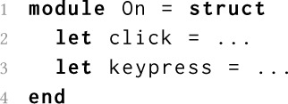
These functions can then be used through qualified accesses:
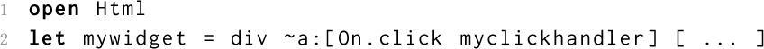
Some users of our HTML library may want to experiment with new, custom-made HTML elements. They can easily do so by extending the Html module:
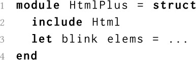
Here, we declare a new module, HtmlPlus, in which we include Html and define the new blink function. The include operation simply takes all the fields of a module and adds them to the enclosing module. This way, we obtain a new module HtmlPlus which can be used anywhere Html can, but also includes the new function.
We now want to build a simple library to handle internet comments. In our library, comments are pieces of HTML (constructed with the Html module) identified by a unique number. We are not sure yet if we should use simple sequential IDs, date-base IDs or something else like UUIDs and Hashids [12]. Fortunately, we do not have to make this decision immediately! All we need in order to write the rest of our engine is an interface for creating and using identifiers. We can declare such an interface in
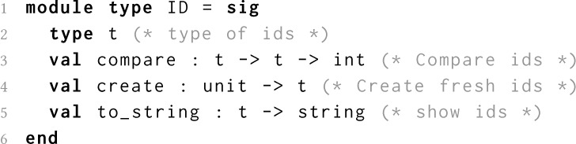
We can then create various modules implementing this specification. Here we declare the modules SequentialID and DateID. We can then switch one module for the other easily.
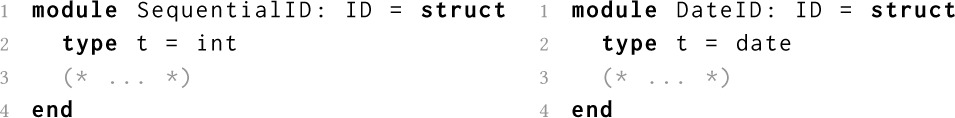
One important thing to note here is that, to the outer world, these two modules have exactly the same type and can not be distinguished. The type that implements the identifiers in the ID signature is abstract: its implementation is only visible inside the module and can not be used outside. It is also useful to note that such abstraction can be provided after the fact. Declaring a module and abstracting its interface are completely distinct operations.
Hiding the internal details of our ID modules is not only useful for modularity: it also allows to enforce abstraction boundaries. For example in the case of SequentialID, it is impossible to inadvertently use the ID as an integer, since the fact that it is an integer is not revealed! We can use this fact to enforce numerous complex properties, as we see in the next section.
To implement our comment system, we sometimes need to find comments by their ID. The idiomatic
The Map.Make functor uses abstraction in two important ways. First, since the type of the map is abstract, it is impossible to modify it through means not provided by the module. In particular, this enforces that the binary tree is always balanced. Second, since the comparison function is provided in advance by the argument of the functor, it is impossible to mix different comparison functions by mistake. Indeed, application of the functor to different modules would yield different types of maps.
This was just a taste of modules. For a longer (and better) introduction to modules, please consult the
Until now, we presented how to write various elements of libraries useful for our comment system. For this purpose, we leveraged the power of the
Section annotations allow the programmer to specify where a declaration should be executed. The programmer can specify whether a declaration is to be performed on the server or on the client as follows:
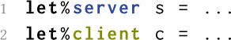
In particular, sections allow to group related code in the same file, regardless of where it is executed. In the rest of this article, we use the following color convention: client is in yellow, server is in blue and mixed is in green. Colors are however not mandatory to understand the rest of this article.
While section annotations allow programmers to gather code across locations, they don't allow convenient communication. For this purpose,
In the example below, the expression 1 + 3 will be evaluated on the client, but it's possible to refer server-side to the future value of this expression (for example, put it in a list). The variable x is only usable server-side, and has type int fragment which should be read “a fragment containing some integer”. The value inside the client fragment cannot be accessed on the server.
Fragments allow programmers to manipulate client values on the server. We also need the opposite direction. Values that have been computed on the server can be used on the client by prefixing them with the symbol . We call this an injection.
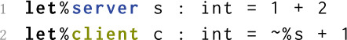
Here, the expression 1 + 2 is evaluated and bound to variable s on the server. The resulting value 3 is transferred to the client together with the Web page. The expression s + 1 is computed client-side. An injection makes it possible to access client-side a client fragment which has been defined on the server. The value inside the client fragment is extracted by x, whose value is 4 here.
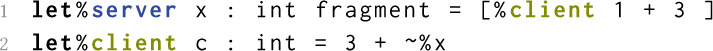
These three constructions are sufficient to create complex client-server interactions. Here, we use them to build a very simple widget to show one comment. Our widget, implemented by the function make_comment shown below, has the additional feature that it will hide the content of the comment when the user clicks on it. We also want the HTML to be generated server-side and sent to the client as a regular HTML page. This allows the comments to be accessible even when
In order to implement our comment widget, we use an HTML DSL [37] that provides combinators such as div and a_onclick (which respectively create an HTML tag and an HTML attribute). The ã is the
As we can see, this type does not expose the internal details of the widget's behavior. In particular, the communication between server and client does not leak in the API: This provides proper encapsulation for client-server behaviors. Furthermore, this widget is easily composable: the embedded client state cannot affect nor be affected by any other widget and can be used to build larger widgets.
In the examples above, we showed that we can interleave client and server expressions and communications in fairly arbitrary manners. This would be costly if the communication between client and server were done naively.
Instead, the server only sends data once when the Web page is sent. In particular, in the comment widget presented above, the id of the comment is not sent for each click. This is made possible by the fact that client fragments are not executed immediately when encountered inside server code. Intuitively, the semantics is the following. When the server code is executed, the encountered client code is not executed right away; instead it is just registered for later execution once the Web page has been sent to the client. Only then is the client code executed. We also guarantee that client code, be it either client sections or fragments, is executed in the order that it was encountered on the server. This presentation might makes it seem as if we dynamically create the client code during execution of the server code. This is not the case. Like
We only gave a brief overview of what can be done with the new language constructs introduced by
We are now equipped with two tools. On one hand, we have a rich and expressive non-tierless module system, as presented in Section 2, which provides abstraction and modularity at the library level. On the other hand, we have a powerful tierless programming language, as presented in Section 3, which allows us to describe sophisticated client-server behaviors. In this section, we present how we can bring those two tools together and reap the numerous benefits of the
Web programming is never only about the Web. Web programmers needs external libraries and a rich ecosystem that can not be provided by a fresh new language. Before writing complex tierless programs, let us see how
Integration with the
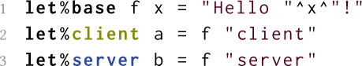
5let%client a = f ”client”
As demonstrated in Section 4.1,
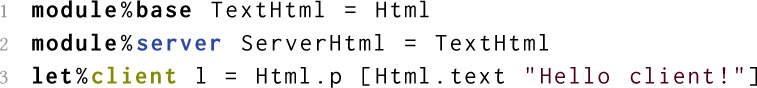
Locations are checked by the compiler. For example, using a server module on the client is forbidden.
It is also possible to reuse
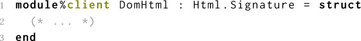
We can easily declare a new structure completely on one location. The constraint is that all the fields on such modules, including submodules, should be on the same location. For example, a client structure can only contain fields that are declared on the client. The following piece of code declares a JsMap client module containing various fields and implementing a dictionary data-structure with
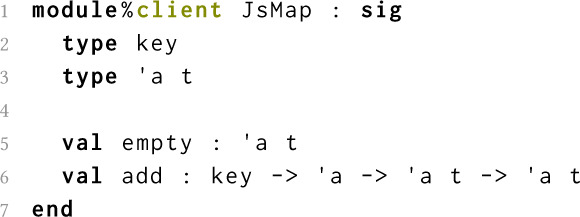
We can also use functors in client and server code as we would in regular
Up until now, we only defined single-location modules, either base, client or server. It is natural to also want to write modules that contain base, client and server declarations. We call these modules “mixed”.
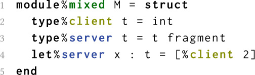
Just like sections, mixed modules allow to group together declarations that are semantically related, regardless of client-server boundaries. However, combining type declarations with mixed modules and module signatures can provide even further benefits.
4.3.1 Encapsulation and Abstraction. A common idiom of web programming is to generate some HTML element on the server, add an id to it, and recover the element on the client through the get_element_by_id function. Indeed, this is exactly what we did in our comment widget in Section 3.4. This is so common, in fact, that it could be considered the “id design pattern”. RPCs, channels and other communication APIs also follow the same mechanisms through the use of uniquely defined URLs. In all these cases, the means of identification for a given object is generally passed around explicitly, instead of being abstracted. Since client and server code are usually written separately, the programmer must expose the internal details to the outer world, including how to identify objects.
By combining tierless annotations and the abstraction capabilities provided by modules, we can recover that lost abstraction. Fig. 6 presents an API that encapsulates unique ids for HTML elements. The API is composed of an abstract type, id, and two operations. The server function with_id takes an HTML element, generates a fresh id and returns a pair composed of the HTML element with that id and the id. The client function find takes an id and retrieves the associated element as a DOM node on the client. The id type is abstract. Both the client and the server functions can use the real definition of id since they are both inside the module. The outer world, however, can not. Mixed modules allow us to allow abstraction to extends over the client-server boundary. This can provide further benefits in the case of more complex data-structures, as we will see in the next section.
We now want to implement a system of client-side search and filtering of comments. The user should be able to search and filter comments directly on the client, without the need to reload the page. For this purpose, we need to maintain the sets of comments both on the server and on the client. One simple way to do that is to create a replicated cache of comments which ensures that all the comments available on the server are also available on the client.
We use the Map module as inspiration and create a functor that takes as argument a module describing the keys. The idea is that adding an entry to a server-side table also adds the element to the client-side table. Consequently, the server-side representation of a table needs to include a client-side one.
The result API is shown in Fig. 7. The resulting module contains both a client and a server side types, both named ’a table, which represent the local table. The module also exposes traditional Map functions. The implementation, shown in Fig. 8, is more interesting. We exploit the fact that client and server namespaces are distinct, and name both client and server map modules M. On the server, the cache is implemented as a pair of a server-side and a client-side dictionary. The server-side add implementation stores a new value locally in the expected way, but additionally builds a fragment that has the side-effect of performing a client-side addition. The retrieval operation (find) returns a shared value that contains both the server side version and the client side. On the client, however, we can directly use the local values. Since the client-side type exactly corresponds to a regular map, we can directly use the usual definitions for the various map operations. This is done by including the client M module on the client.
Note that this functor cannot be implemented in a decomposed way without sacrifying either abstraction or modularity. Indeed, the server implementation relies on the client-side version of the functor argument (Comparable) to implement proper usage of the keys. Furthermore, the signature of the functor ensures that the server-side and client-side parts of the cache are in sync without leaking any implementation details. Separating this mixed functors in two would require exposing the guts of the data-structure. Abstraction also makes it easy to extend such modules with new features. For example, it would possible to add full-blown replication through “push” or “pull” communications between the client and the server. Thanks to the abstraction provided by the signature of the module, this can even be done while keeping the API of the functor unchanged.
We can now use this cache for our comment system by using, for example, the DateID module for the keys. This is done in Fig. 9. Adding a new comment to the page is done through the add_comment server function. This function creates the associated HTML using the widget defined in Section 3.4 and adds it to the cache. We can then create the webpage containing all the comments simply by collecting all the comments and putting them inside a div. This is done by the generate_page server function. Finally, the client function filter_comments filters the shown comments on the client. It takes as argument a predicate function and the current client cache. It uses this predicate function to filter the cache, using the function CommentCache.filter, which directly uses the equivalent function from the Map module. We then find the HTML element containing all the elements and replace them them by the updated list.
Through these various examples, we demonstrated how we can combine traditional tierless features with advanced features of the
Rich module systems such as
For space reasons, we do not attempt to provide a complete description of our module language. Instead, we highlight a few key elements that are novel in our approach. We first present some notes in the typechecking of modules (Section 5.1) and the compilation process (Section 5.3).
On several occasions, we used base, client, server or even mixed modules in conjunction. We even applied a base functor such as Map.Make on a client module. Typechecking such a mix of base and non-base modules is not so trivial. Indeed, let us consider the functor application Map.Make(JsDate) presented in Section 4.2. Both the input and output signatures of Map.Make contain base fields. However, JsDate only contains client fields. Furthermore, one would expect JsMap, the result of the application, to be only usable on the client. In all these cases, we must “specialize” the Map.Make module to be usable on the client. This problem is similar to the application of a polymorphic function. Indeed, when checking the application of a function of type ∀α.α → α to an argument of type int, we first instantiate the function to int → int before checking the application.
We use a similar technique to typecheck tierless modules. Instead of a set of type variables, we have a single “location variable” that is always called “base”. When using a module in a client or a server context, we specialize it to ensure that all the fields are properly accessible. The specialization operation, noted ..ℓ where ℓ is “client” or “server”, projects a “view” of the type of the module where all the fields are in the current location. For base modules, it simply rewrites the signature by substituting all instances of the location “base” by the specified “client” or “server” location. Fig. 10 presents two example of specialization for base modules. Note that before being specialized, a module should be actually accessible in the given scope. This means that we never have to specialize a server module on the client (or conversely).
The important part however is that specialization is completely transparent for the user. Much like instantiation of polymorphic function, specialization is automatically handled by the typechecker and requires no special care from the programmer. The programmer only has to specify client, server and base locations.
Specialization is also used to enforce proper location usage for mixed modules. Indeed, mixed modules can be used on the client and on the server. In these cases, only the server (resp. client) part should be visible.
Mixed structures. For a structure, aka a collection of declarations, specialization hides the parts of a module that are not relevant to the current side. An example of specialization of a mixed structure is provided in the top half of Fig. 13. Here we can see that, as is the case for base modules, base declarations are now client. Furthermore, we also remove all the server declarations present in the structure. The end result is a structure that only contains client declarations. From a runtime point of view, the specialized type is also faithful to the content of the module: indeed, a base declaration can always be considered to be present client-side (as well as server-side) and declarations can be hidden thanks to module subtyping. This way, we ensure that if a structure $(\mathtt {struct}\ M\ \mathtt {end})$ can be given a type $(\mathtt {sig}\ S\ \mathtt {end})$ , then it can also be given a type $\left.{sig}\ S\ \mathtt {end}\right.{\ell }$ .
Mixed functors. Functors bring additional complexity. A naive implementation of specialization of mixed functors would be to specialize on both side of the arrow and apply the resulting functor. Let us see on an example why this solution does not work. In Section , the functor F takes as argument a module containing a base declaration and uses it on both sides. If the type of the functor parameter were specialized, the functor application in Fig. 12 would be well-typed. However, this makes no sense: M.y is supposed to represent a fragment whose content is the client value of b, but this value doesn't exist, since b was declared on the server. There would be no value available to inject in the declaration of y’.
The solution here is that specialization on mixed functors should only specialize the return type, not the argument type. This is demonstrated in the bottom half of Fig. 13. This way, the complete mixed module is given as argument to the mixed functor and specialization happens on the result of the functor only.
In Section 3.5, we presented the semantics in term of a two-stage execution: first the server, then the client. This interpreted semantics is easier to understand, but would involve runtime code generation which would be quite inefficient. In the implementation, the
For one-sided modules, the process is fairly simple: we simply take the whole module to the appropriate side. Similarly for mixed structures, we cut the whole structure in two. Complications arise for mixed functors. The idea is the following: we equip each mixed module with a unique identifier. This identifier is static for mixed structures but is dynamic for modules resulting of a functor application, such as F. On the server, this identifier is added as a field of the module. On the client, we simply maintain a table from identifiers to modules. When applying a functor, we remember the fact that the associated functor application should be done on the client. When sending the page to the client, we also send this information. The client will then ensure that this functor application is done at the appropriate time. This process can be seen as an extended version of the one used for
This compilation method also hints at some limitations of mixed functors: arguments of mixed functors must have an identifier pointing to their client half. One method is to add these identifiers to every mixed structures and force arguments of mixed functors to also be mixed. This restriction can be partially lifted through some simple static analysis to insert identifiers appropriately. Evaluating how constraining these restriction are in practice is the subject of future work.
Radanne [28] gives a formal description of both the expression and the module language. It presents the type system, the module system, the interpreted semantics presented in Section 3.5 and the compilation scheme. This formalization demonstrates, among other things that the integration with
A comprehensive comparison of the tierless expression language can be found in Radanne et al. [29]. It is notoriously delicate to compare modules systems. Instead, we focus on the modularity and abstraction aspects and in particular the interaction between tierless programming, separate compilation and data abstraction. Within these criteria, the various approaches can be separated into three categories: slicing as a global compiler transformation, interpreted languages and modular compiled languages.
One approach for slicing a tierless program into a client part and a server part is to apply a whole-program transformation over the complete program. Such approach is, by essence, incompatible with separate compilation. Furthermore, whole-program slicing usually relies on some other program transformations (inlining, monomorphisation, defunctorisation, ...) that tend to be non-modular and cross abstraction boundaries.
There has been a lot of work on bringing static slicing to
Some interpreted languages relies on slicing at runtime to extract the client part of the program and send it alongside the generated Web page. While this is more expressive, it does not provide any of the guarantees provided by static slicing.
Modular macros [24, 39] are another extension of
We presented a module system for
The need for a module system which integrates tierless annotations comes directly from the development of libraries and Web applications as part of
This paper is published under the Creative Commons Attribution 4.0 International (CC-BY 4.0) license. Authors reserve their rights to disseminate the work on their personal and corporate Web sites with the appropriate attribution.
WWW '18, April 23-27, 2018, Lyon, France
© 2018; IW3C2 (International World Wide Web Conference Committee), published under Creative Commons CC-BY 4.0 License. ACM ISBN 978-1-4503-5640-4/18/04.
DOI: https://doi.org/10.1145/3184558.3185953